A concrete build order for a personal generative-audio/instrument project: text-to-speech sliced per word, pitch detection driving a vocoder, offline pitch-shifted vocal samples for singing, and a live Whisper-to-local-LLM-to-instrument ...
This traces the talk's build order from typed/spoken input through word slicing and pitch synthesis to a guitar note singing the output; the offline World pre-bake and live vocoder paths are separate branches feeding the same output stage (ours).
“JUCE. Really awesome for anyone building”
said at 05:43“the decibels are are very much close”
said at 08:15“what it does is it detects the pitch”
said at 10:20“we push it through a vocoder”
said at 10:50“I used a project called World”
said at 15:48“very heavy process, and so I can't”
said at 15:48“speak in the mic, use uh speech to text”
said at 13:41“could build so many really cool things”
said at 17:51(ours) The pre-bake requirement for the vocal-sample singing path is the load-bearing constraint in this build: real-time pitch-shifted vocal synthesis wasn't fast enough to run live, which is the kind of latency tradeoff that shows up in most projects chaining STT/TTS with heavier DSP or sample-based synthesis.
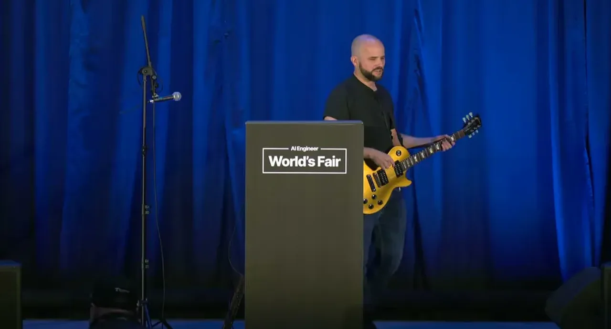
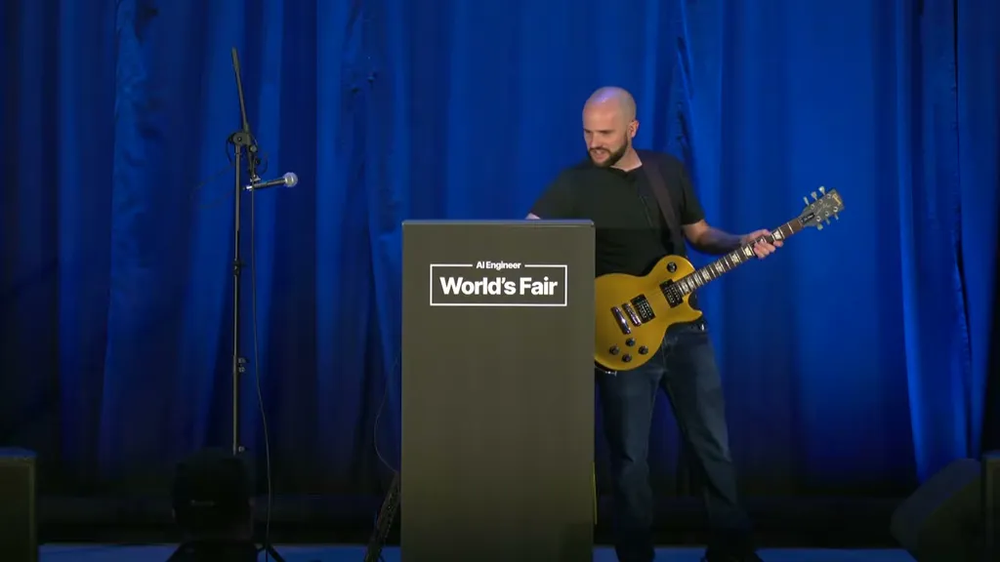
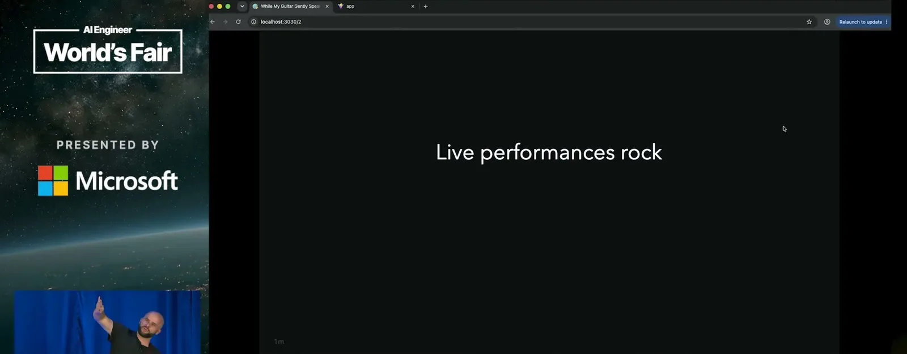
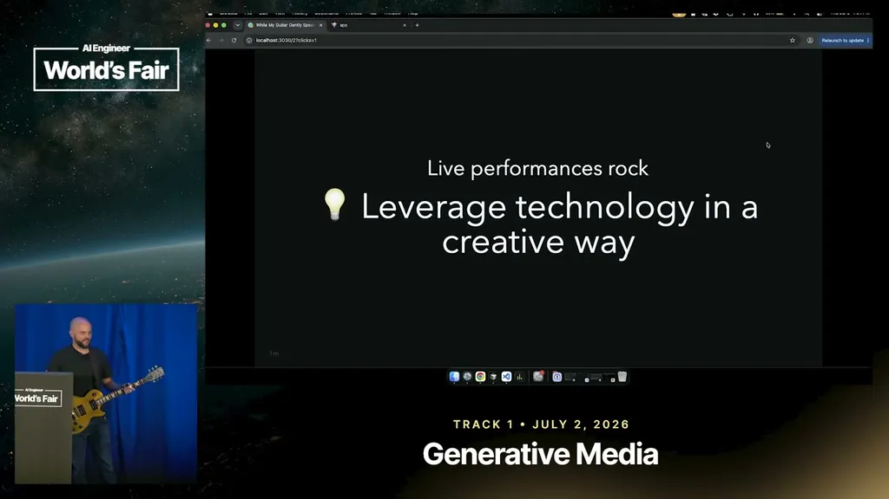
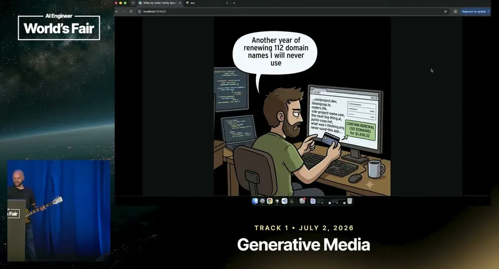
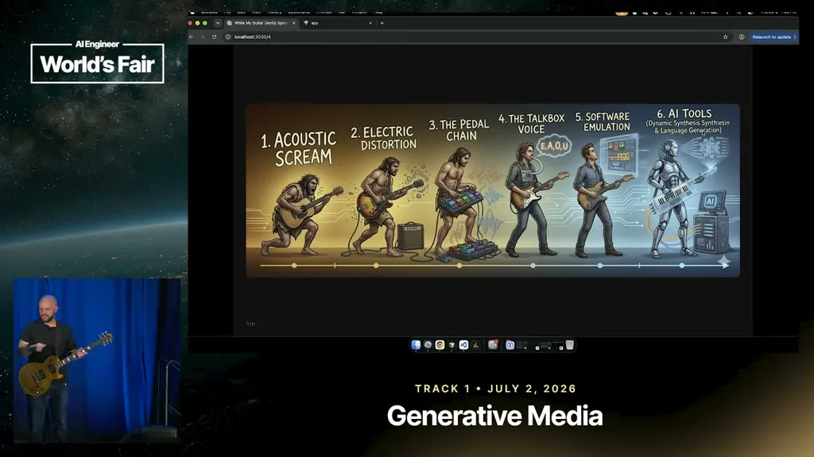
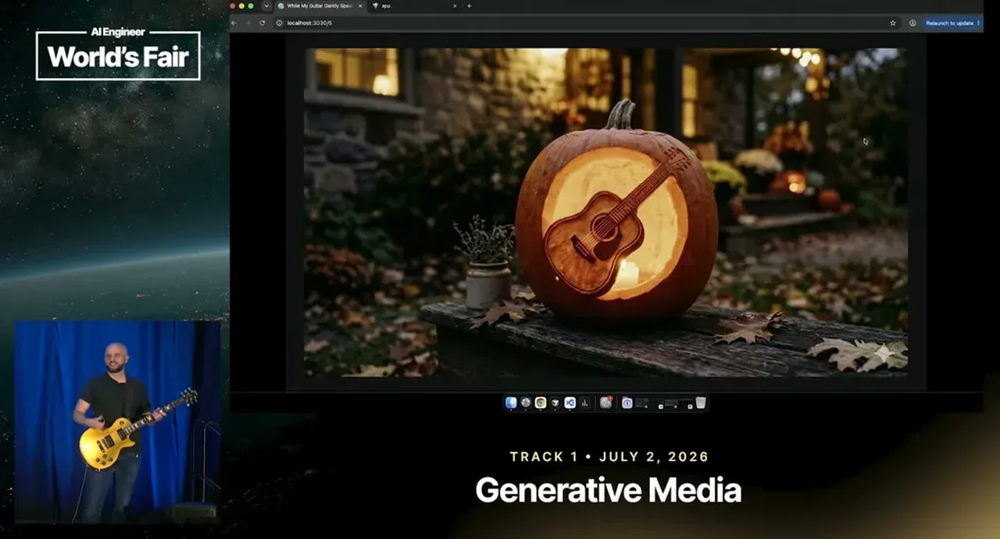
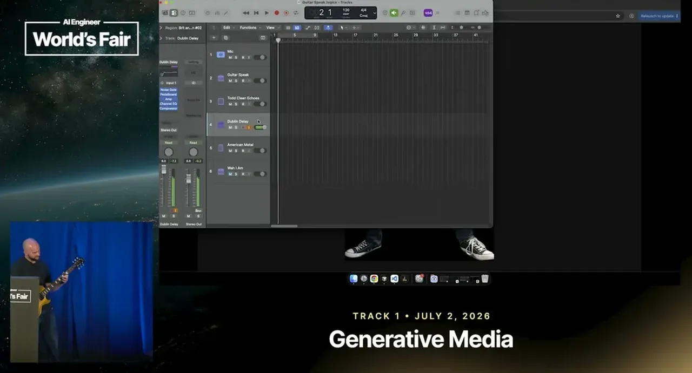
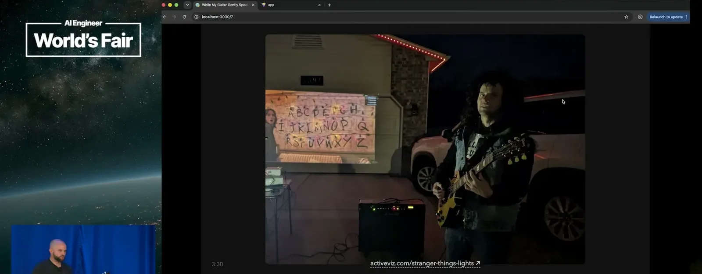
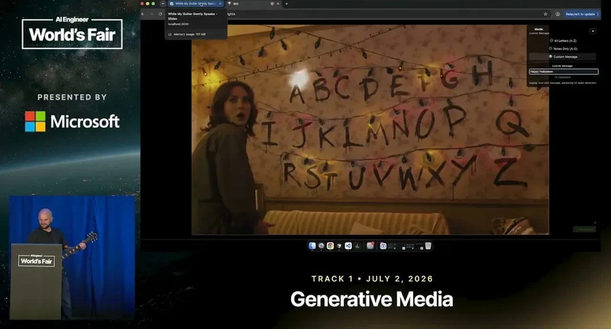
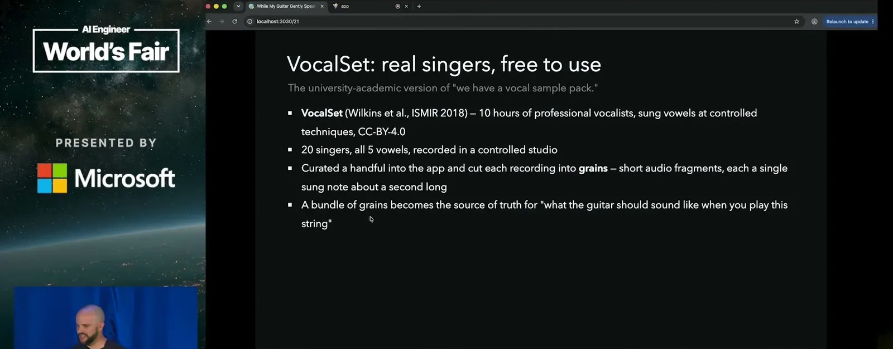
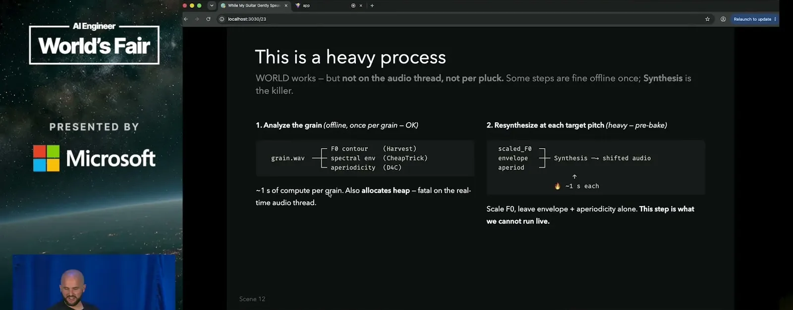
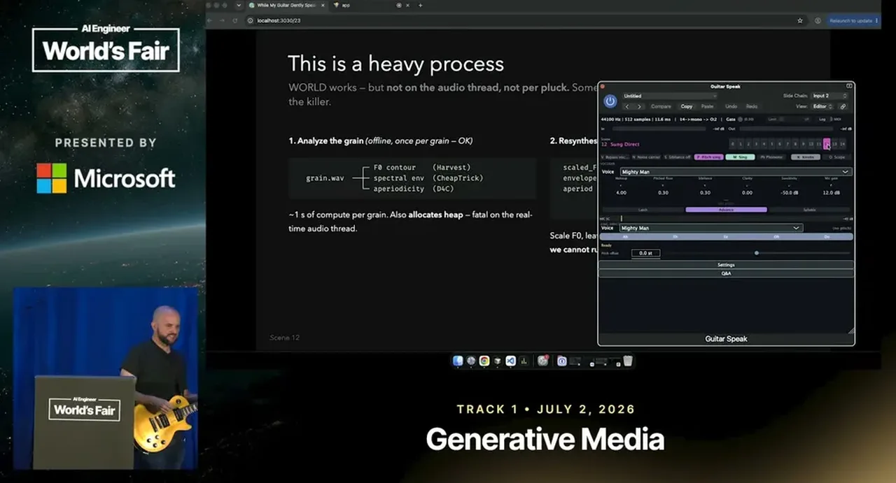
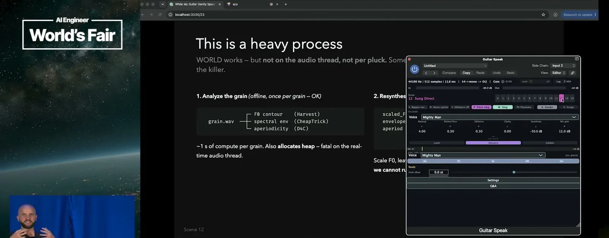
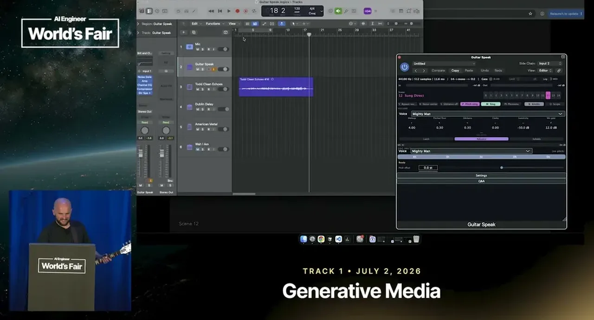
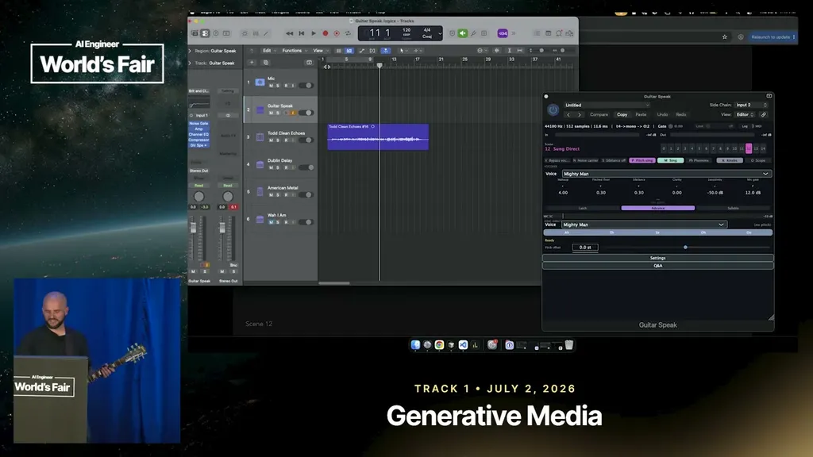
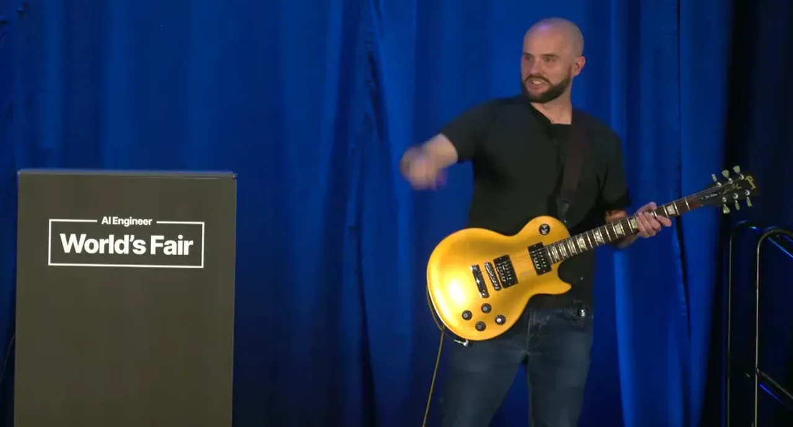
| Stance | Claim | t |
|---|---|---|
| asserts | The plugin was built using JUCE, a framework for building audio software, inside a DAW (Logic Pro). | 05:43 |
| warns | Energy-gap segmentation cuts audio wherever decibel levels are close to zero, but this is not fully reliable because normal speech often has no silence between words. | 08:15 |
| asserts | The YIN pitch algorithm is used to detect the fundamental pitch of a played guitar note. | 10:20 |
| asserts | The synthesized note is pushed through a vocoder along with the voice clip so it sings. | 10:50 |
| asserts | Real singer recordings from the VocalSet dataset are pitch-shifted with the World project and mapped to guitar notes for a more natural singing tone. | 15:48 |
| warns | The World-based pitch-shifting process is too heavy to run live, so the vocal samples have to be pre-baked before they can be used in a jam. | 15:48 |
| asserts | A conversational mode pipes a spoken question through Whisper speech-to-text and a local LLM, then plays the generated reply back on the guitar. | 13:41 |
| recommends | AI has lowered the time cost of building side projects enough that people should go build the passion project they've been putting off. | 17:51 |
Machine-readable copy embedded in this page (script#ontology) and in the corpus ontology.